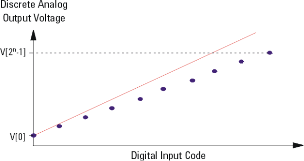
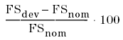
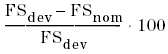
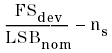
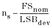
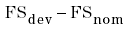
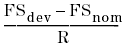
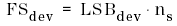
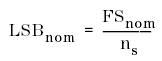
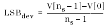

Full Scale Gain (FS Gain)
The gain error is a measure of the output error between an ideal DAC and the actual device at full scale output.

Only the endpoint method is used.
Depending on the unit selected the scaling factor in the FS Gain error calculation changes. The following formula apply:
unit |
formula used to calculate FS Gain |
|---|---|
%nom |
 |
%dev |
 |
LSBnom |
 |
LSBdev |
 |
mV, V |
 |
uA, A |
 |
FSnom is the Full Scale output voltage of the ideal DAC.
R is the input impedance set up for the analog module used. This value is specified in the Analog Setup Tool.
FSdev is the Full Scale output voltage of the actual DAC:

LSBnom is the LSB of an ideal DAC:

LSBdev is the LSB of the actual DAC:
